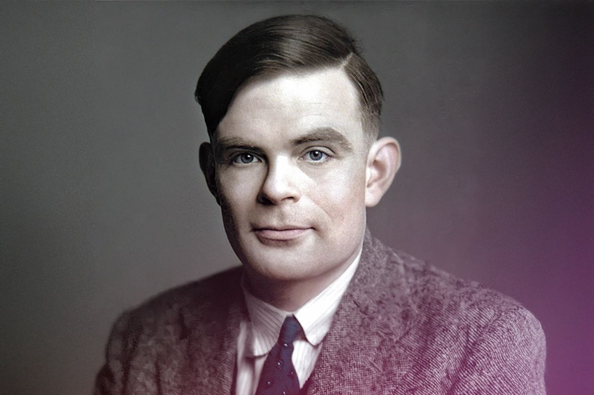
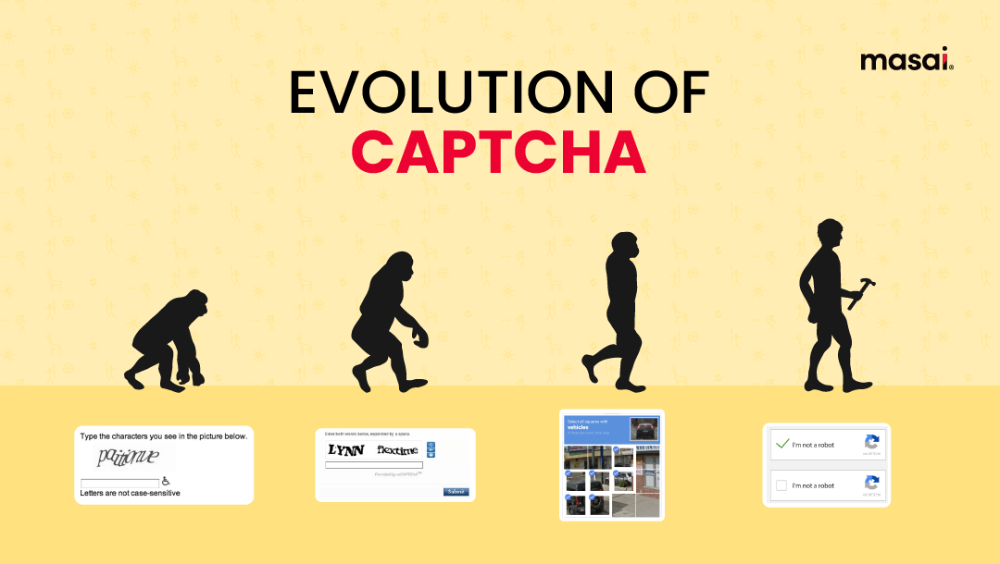
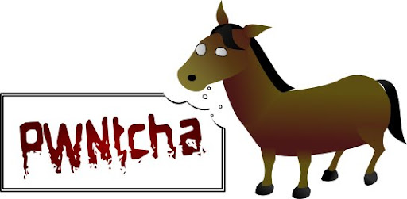

Зміст розділу

Витоки та тест Тюрінга (1950-ті роки)
Фундамент концепції заклав британський математик Алан Тюрінг. У 1950 році він запропонував імітаційну гру для визначення інтелекту машини. Сучасна капча є зворотним тестом Тюрінга: тут саме комп'ютер виступає екзаменатором, щоб підтвердити людську природу відвідувача.
Перші виклики та офіційне народження (2000 рік)
У 90-х роках боти почали масово спотворювати результати онлайн-опитувань та розсилати спам. Сервіс AltaVista одним із перших застосував викривлений текст для захисту. Офіційно ж термін CAPTCHA закріпили у 2000 році вчені з Університету Карнегі-Меллона, зокрема Луї фон Ан та Мануель Блюм. Вони створили алгоритм, що генерував символи з графічними перешкодами, які були нечитабельними для тогочасних програм розпізнавання.

Ера reCAPTCHA та оцифрування книг (2007 рік)
У 2007 році з'явився проєкт reCAPTCHA. Головна ідея полягала в тому, щоб зробити процес перевірки корисним. Користувачі розпізнавали не просто випадковий набір букв, а реальні фрагменти зі старих газет та книг (наприклад, архіву The New York Times), які не вдавалося оцифрувати автоматично. Пізніше Google придбав цей сервіс, адаптувавши його для покращення розпізнавання адрес та номерів будинків на картах.

Безпека та боротьба з автоматичним розпізнаванням
З розвитком капчі вдосконалювалися і методи її обходу. Для захисту ресурсів розробникам довелося враховувати кілька критичних вразливостей. Наприклад, використання фіксованих елементів на графіку або простого розмиття за Гаусом дозволяло спеціалізованому ПЗ (як-от PWNtcha) успішно зчитувати коди. Крім того, при недостатній кількості варіантів відповідей боти могли вдаватися до звичайного перебору або вгадування, що змусило робити тести динамічними та унікальними для кожного запиту.
Еволюція до графіки та ШІ (2014–2026)
З часом текстові коди стали вразливими, що призвело до появи графічних тестів — вибору зображень із вітринами, дорожніми знаками або транспортом. Сучасна версія reCAPTCHA v3 працює у фоновому режимі, аналізуючи рухи курсора та IP-адресу без активної участі людини. Однак штучний інтелект створює нові виклики: моделі типу GPT-4 вже здатні розгадувати складні візуальні завдання, використовуючи сучасні методи обробки зображень.
Технічні нюанси та причини збоїв
Системи перевірки можуть працювати некоректно через репутацію мережі. Якщо одна IP-адреса використовується багатьма користувачами, система може сприйняти активність як підозрілу. Також на коректність роботи впливає використання VPN, наявність вірусів у системі або вимкнена підтримка JavaScript, яка є необхідною для обробки сучасних алгоритмів захисту.